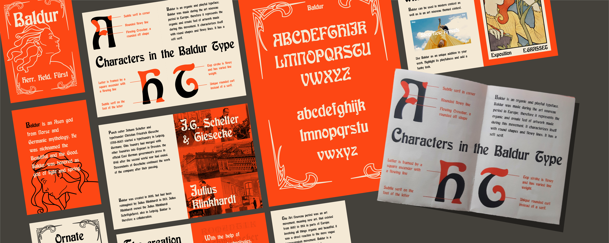

Typografie: Art Nouveau
Een typografische verkenning van Art Nouveau
-
skills
print, grid, branding, typografie, illustratie
-
periode
september 2022
-
opdrachtgever
Minor VID
Opdracht
Bij dit vak waren er twee opdrachten: Maak een A2 poster van een vier letter woord in het font die je in de stad hebt gevonden. Ontwerp een publicatie over het font, waarbij je een beeld van het lettertype geeft met historie, karakter, vormgeving, details en toepassing.
Four letter word
Tijdens een stadswandeling kwam ik deze Art Nouveau typografie tegen. Aan de hand van de Oosterparkschool typografie heb ik een four letter poster vormgegeven.
Het lettertype die ik had gebruikt voor mijn four letter word poster was niet geschikt voor de publicatie, aangezien het een lettertype is die enkel initial capitals bevat, de eerste gedecoreerde letters aan het begin van een paragraaf. Hierdoor heb ik een ander lettertype voor mijn publicatie onderzocht: Baldur.
Publicatie: Baldur
Alle ontworpen pagina's met alle kenmerken van het lettertype Baldur.

Next Up
Bladerunner 2049 Tekst en geluid visualisaties
Captioning voor Doven/slechthorenden